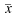
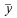

This function can be accessed by the Correlate command of the Analysis-tables menu when a table is selected. The correlation function, also known as the covariance function is used to test the similarity of two signals x(t) and y(t). It is computed by:
in which  and  are the mean values of the signals x(t) and y(t) respectively. If the number of points is N, the function will be computed between -N/2 and N/2. The abscissas are therefore point numbers and not t values.
To perform a cross correlation between two signal, they must be in the same table and use the same abscissa. You just have to select the two columns in the table, and select the Correlate command from the Analysis-tables menu. A plot will be created and the values of the correlation function will be added as two new columns in the table.
The correlation of a signal with itself can also be used in spectral analysis (it is then called autocorrelation or autocovariance function). This operation can be performed by selecting one column in a table and use the Autocorrelate command from the Analysis-tables menu.